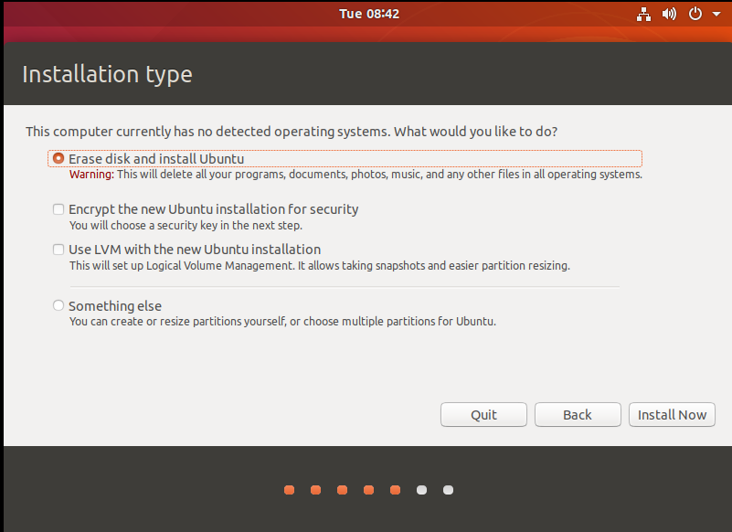
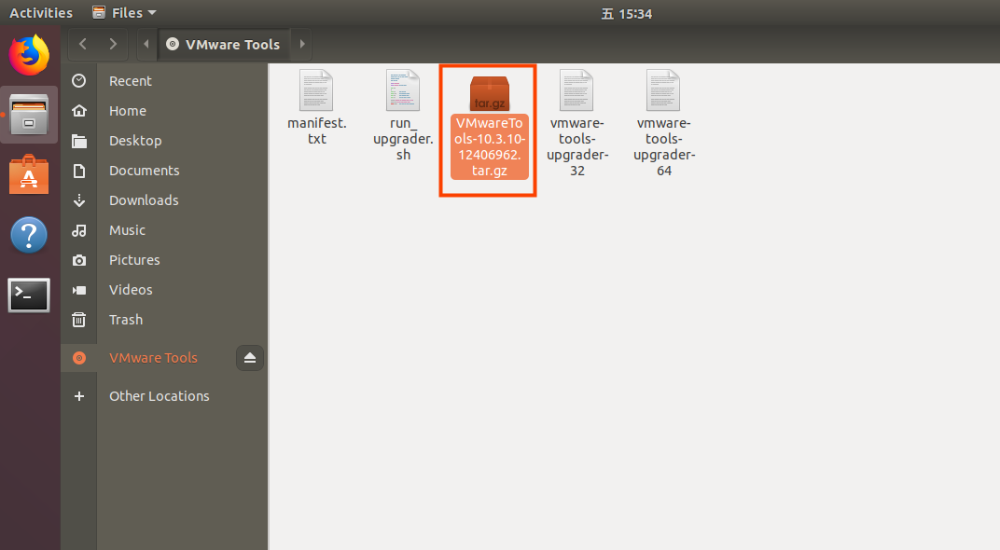
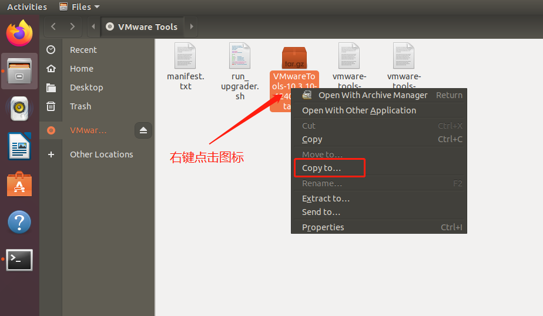
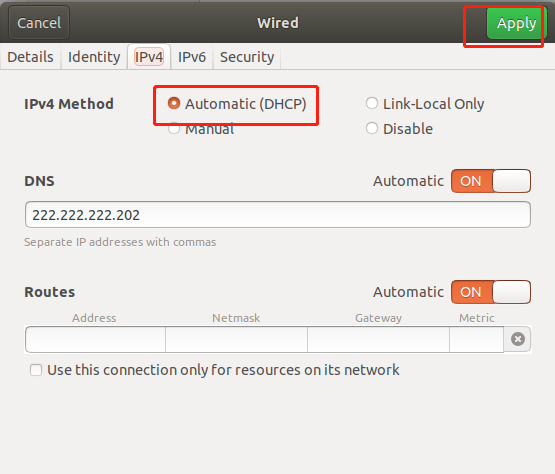
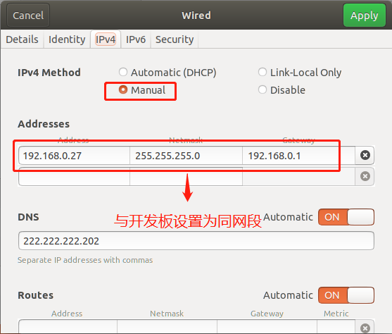

OK3576-C_Linux6.1.84_User’s Compilation Manual_V1.0
Document classification: □ Top secret □ Secret □ Internal information ■ Open Copyright Notice
Copyright Notice
The copyright of this manual belongs to Baoding Folinx Embedded Technology Co., Ltd. Without the written permission of our company, no organizations or individuals have the right to copy, distribute, or reproduce any part of this manual in any form, and violators will be held legally responsible.
Forlinx adheres to copyrights of all graphics and texts used in all publications in original or license-free forms.
The drivers and utilities used for the components are subject to the copyrights of the respective manufacturers. The license conditions of the respective manufacturer are to be adhered to. Related license expenses for the operating system and applications should be calculated/declared separately by the related party or its representatives.
Overview
This manual is designed to enable you board to quickly understand the compilation processof the products and familiarize yourselves with the compilation methods of Forlinx products. The application program needs to be cross-compiled on the Linux operating system before it can run on the development board. According to the method in the compilation manual, you can compile your own software code through practical operation.
The manual will provide instructions for setting up the environment but there may be some unforeseen issues during the environment setup process. For beginners, it is recommended to use the pre-configured development environment provided by us. This will allow you to quickly get started and reduce development time.
Linux systems are typically installed in three ways: dual system on a real machine, single system on a real machine, and virtual machine. Different installation methods have their advantages and disadvantages. This manual only provides methods to build ubuntu in a virtual machine.
Hardware requirements: It is recommended to have at least 6GB of memory or more, so that you can allocate some memory to run the virtual machine (the virtual machine is recommended to have more than 2GB) and still do other operations on Windows, otherwise it will affect the performance of Windows.
This manual is mainly divided into four chapters:
Chapter 1. is mainly about the installation of VMware, and the version used is VMware® Workstation 15 Pro15.1.0. Please install VMware before using the ubuntu development environment.
Chapter 2. mainly introduces the method of loading the ubuntu development environment provided by Forlinx, and the development environment is 64-bit ubuntu22.04.
Chapter 3. mainly introduces the method of building a new ubuntu development environment. It takes 64-bit Ubuntu 22.04 as an example to describe the creation process of Ubuntu. Due to different computer configurations, unexpected problems may arise during the setup process. It is recommended for beginners to use the environment that we have set up directly.
Chapter 4. mainly introduces the methods of compiling the source code related to the development board.
A description of some of the symbols and formats in the manual:
Format |
Meaning |
|---|---|
Note |
Note or information that requires special attention, be sure to read carefully |
Relevant notes on the test chapters |
|
️ |
Indicates the related path. |
Blue font on gray background |
Refers to commands entered at the command line(Manual input required). |
Black font on gray background |
Serial port output message after entering a command |
Bold black on gray background |
Key information in the serial port output message |
// |
Interpretation of input instructions or output information |
Username@Hostname |
root@ok3576: Development board serial port login account information, forlinx@ok3576: Development board network login account information forlinx@ubuntu: Development environment Ubuntu account information. Users can use this information to determine the environment for functional operations. |
After packaging the file system, you can use the “ls” command to view the generated files.
forlinx@ubuntu:~/3576$ ls //List files in this directory kernel-6.1.tar.bz2 |
|---|
forlinx@ubuntu: the username is forlinx and the hostname is ubuntu, indicating that the operation is performed in the development environment ubuntu.
//: Explanation of the instruction, no input
Ls: Blue font on a gray background, indicating relevant commands that need to be entered manually
kernel-6.1.tar.bz2: The black font at the bottom is the output information after the input command, and the bold font is the key information. Here is the packaged file system.
Application Scope
This manual is mainly applicable to the Linux6.1.84 operating system on the Forlinx OK3576-C platform. Other platforms can also refer to it, but there will be differences between different platforms. Please make modifications according to the actual conditions.
Revision History
Date |
Manual Version |
Revision History |
|---|---|---|
23/01/2025 |
V1.0 |
OK3576-C Linux6.1.84 User’s Compilation Manual Initial Version |
1. VMware Virtual Machine Software Installation
This chapter mainly introduces the installation of VMware virtual machines, using VMware Workstation 15 Pro v15.1.0 as an example to demonstrate the installation and configuration process of the operating system.
1.1 VMware Software Download and Purchase
Go to the VMware website https://www.vmware.com/cn.html to download Workstation Pro and get the product key. VMware is a paid software, you need to buy it yourself, or use the trial version provided by VMware.

After the download is complete, double-click the installation file to start the installation program.
1.2 VMware Software Installation
Double-click the startup program to enter the installation wizard.

Click on “Next”.

Check the terms in the license agreement that I accept, then click “Next”.

Modify the installation location to the partition where you want to install the software on your computer, then click ‘“Next”.

Check and click on “Next”.

Check the box to add a shortcut, then click “Next”.

Click “Installation”.

Wait for the installation to complete.

Click “Finish” to try it out. If users need to use it for a long time, they need to buy it from the official and fill in the license.
2. Loading the Existing Ubuntu Development Environment
**Note: **
It is recommended that beginners use the virtual machine environment built by Forlinx directly. After understanding this chapter, you can directly jump to the compilation chapter for further study. The development environment provided is: forlinx (username), forlinx (password).
There are two ways to use a virtual machine environment in VMware: One is to directly load an existing environment, and the other is to create a new environment. First talk about how to load an existing environment.
First, download the development environment provided by Forlinx. In the development environment documentation, there should be an MD5 checksum file. After downloading the development environment, you should verify the integrity of the compressed package using the MD5 checksum. (You can use an on-line MD5 checksum tool or download a specific MD5 checksum tool for this purpose). To check if the checksum in the verification file matches the checksum of the file itself. If they match, the file download is successful. If they don’t match, it suggests that the file may be corrupt, and you should consider downloading it again.
Select the zip file to unzip together.
After decompression, a 3576 standard environment folder appears, where .vmx is the file that the virtual machine needs to open.

Open the virtual machine and select the extracted OK3576.vmx.
Turn on this virtual machine after loading is complete to run it and enter the system’s interface.
The account of the development environment is forlinx, and the password is forlinx. After filling in the password, select “Sign in”.


3. New Ubuntu Development Environment Setup
Note: Beginners are not recommended to build the system by themselves. It is suggested to use the existing virtual machine environment. If you do not need to build the environment, you can skip this section. This section mainly explains the process of building the ubuntu system.
3.1 Ubuntu System Setup
3.1.1 Ubuntu Virtual Machine Setting up
Open the VMware software, click on create a new virtual machine. Enter the following interface.

Choose custom, and click “Next”.

Select the compatibility with the corresponding version of VMware, which can be found in Help->About VMware Workstation, and click “Next”.

Select Install the operating system later and click “Next”.

Leave the default and click “Next”.

Modify the virtual machine name and installation location, click “Next”.

Set the number of processors as appropriate.

Also set the memory size according to the actual situation (it is recommended to adjust the memory size to 20G or more).

Set the network type, the default is NAT mode, click Next. Keep the default values for the remaining steps until you reach the step to specify the disk capacity.

The default selection for the IO controller type here is LSI.

The default selection here is also SCSI.

Choose to create a new virtual disk here.

Set the disk size to 200 gigabytes and select the form in which the disk exists, then click Next to finish.

Specify the disk file, the default one here is fine.

Click “Finish” by default.
The virtual machine creation is now complete.
In the next section, we will introduce the installation of Ubuntu system in the virtual machine, which is similar to the installation method in the real machine. Here we describe the method of installing Ubuntu system in a virtual machine.
3.1.2 System Installation
Go to the Ubuntu official website to download ubuntu-22.04.4-desktop-amd64.iso. Download address is: https://releases.ubuntu.com/22.04/?_gl=1_9cp3d2__gcl_au*MjA2NTM4NTAwNy4xNzIyMzEwNTA2&_ga=2.183316389.2088500894.1722310494-245248835.1722310494

Right-click on the newly created Ubuntu 64-bit and select Settings from the pop-up menu.

The “Virtual Machine Settings Menu” pops up as shown below:

Click on CD/DVD (SATA), select “Use ISO image file,” browse and choose the previously downloaded Ubuntu image, then click “OK” to confirm.

After setting up the image, ensure that the network is available. Then, start the virtual machine and proceed with the installation of the Ubuntu image.

After starting the virtual machine, wait for the installation interface to appear as shown below.

After selecting the language on the left side as shown in the image, click “Install Ubuntu”, and the language selection interface will pop up. Ubuntu default language is English, of course, you can also choose others, the default choice of language in the later stage can also be reset,after selection then click continue.
Next, by default, select continue to finish the installation, the installation process will be very slow, then click “continue”:
Next, select continue by default to continue the installation, the installation process will be very slow, and then click “continue”:

Next, select the timezone. You can either click on the Shanghai timezone or enter “Shanghai” (or choose the appropriate timezone based on your location). Then, click “Continue” to proceed. Finally, set your username and password and click “continue” to automatically install the program:

The installation process is shown in the figure below, you can skip it if the network is bad, it will not affect the installation.
After the installation, click “Restart Now” to reboot (or click “Reboot Client”):
After the reboot, you need to log in with your username and password, and the system interface is shown below after logging in:
Above, after shutting down the virtual machine, restore the CD settings, configure it as shown below, click “OK”, and then reopen the virtual machine to see if you can boot Ubuntu normally.
3.1.3 Basic Ubuntu Installation
After installing the Ubuntu22.04 operating system, there are a few configurations to make.
VMware Tools Installation:
Next, install VMware Tools. Without installing this tool, you won’t be able to copy and paste and drag file between the Windows host and the virtual machine. First click on “Virtual Machines” on the VMware navigation bar, then click “Install VMware Tools” in the drop-down box.

Once done, enter Ubuntu and the VMware Tools CD icon will appear on your desktop, click into it:

Double-click on the VMwareTools icon, go to it and see a zip file VMwareTools-10.3.10-12406962.tar.gz (it may be different for different VM versions).

Copy the file under the home directory (i.e., the directory of the home personal username):


Press the keyboard [Ctrl+Alt+T] to bring up the terminal command interface, use the tar command to unzip the VMwareTools installation package (using the sudo command will prompt you to enter the password, follow the prompt to enter the password and press Enter, Linux system password input has no echo, make sure the password is correct and press Enter to confirm):
forlinx@ubuntu:~$ sudo tar -xvf VMwareTools-10.3.10-12406962.tar.gz
[sudo] password for forlinx:
After executing the extract command, use ls to view the file directory vmware-tools-distrib, and go to the directory.
forlinx@ubuntu:~$ ls
Desktop examples.desktop nfs snap tftp VMwareTools-10.3.10-12406962.tar.gz vmware-tools-distrib work
forlinx@ubuntu:~$ cd vmware-tools-distrib/ //Use the CD command to enter the directory
forlinx@ubuntu:~/vmware-tools-distrib$ ls //View the files in this directory
bin caf doc etc FILES INSTALL installer lib vgauth vmware-install.pl
In the current directory, enter sudo ./vmware-install.pl to install, enter the password after pressing Enter, and then start the installation. When you encounter [yes]/[no], enter yes, and press Enter for the rest to install by default.
forlinx@ubuntu:~/vmware-tools-distrib$ sudo ./vmware-install.pl
[sudo] password for forlinx: //Enter the password of the forlinx account, no display, cannot see the input content
The installation process information is long, here omitted.
open-vm-tools packages are available from the OS vendor and VMware recommends
using open-vm-tools packages. See http://kb.vmware.com/kb/2073803 for more
information.
Do you still want to proceed with this installation? [no] yes //Enter yes
... ...
After completing the VMware tools tool, you can achieve file copy and paste, virtual machine adaptive full display and other functions between Windows and Ubuntu. If the virtual machine cannot be displayed in full screen, you can click View, select Auto-resize Guest Display, and click Fit Guest Now to achieve the virtual machine. VMware tools installation is successful.
Basic Settings:
Make most of the system settings in the location shown below. A lot of the setup requirements on Ubuntu can be done here.
3.1.4 Ubuntu Network Settings
NAT Mode
Before using the network, make sure that our virtual machine can connect to the Internet, open the virtual machine settings, and change the network bridge mode in the network adapter to “NAT mode”:

When the VMware virtual NIC is set to NAT mode in a virtual machine, the network in the Ubuntu environment can be set to dynamic IP. The virtual NAT device and the host NIC are connected to communicate for Internet access in this mode. This is the most common way for our VM to get on the extranet.


The network is set to dynamic IP.

Bridge Mode:
If TFTP, SFTP and other servers are used, the network contact mode of the virtual machine needs to be set as the bridge mode. When the VMware virtual NIC is set to bridge mode, the host NIC and the VM NIC communicate via a virtual bridge, which requires the Ubuntu IP to be set to the same network segment as the host IP.


Set the static IP. At this time, the Ubuntu IP and the host IP should be set in the same network segment.

Note: The IP and DNS involved in the network settings section should be set according to the user’s own actual environment, the manual is an example.
3.1.5 Loading U Disk
Open VM Settings, USB Controller, select USB 3.0 in Compatibility and “OK”. As shown in the picture below, since most computers nowadays support USB3.0 ports, if you don’t set it up, when you plug in the USB3.0 port, we can’t connect to the virtual machine.
The principle is as follows:
After the virtual machine boot, insert the U disk, the virtual machine will be more in the lower right corner of the icon similar to the “U disk”, right-click –> connect, and then you can see in the file system to see more than a directory, that the U disk loaded successfully, as shown in the figure:

3.1.6 Virtual Machine Basic Library Installation
Before development, there are some other necessary libraries, we use the following commands to install them one by one, before installation, you need to ensure that the network can be used normally, you can get on the extranet:
forlinx@ubuntu:~$ sudo apt-get update // Update the information of download sources
forlinx@ubuntu:~$ sudo apt-get install build-essential // Provide the list information of software packages necessary for compiling programs
forlinx@ubuntu:~$ sudo apt-get install libncurses* // Used to generate a text-based user interface
forlinx@ubuntu:~$ sudo apt-get install lzop // A compression and decompression tool based on the Lzo library
forlinx@ubuntu:~$ sudo apt-get install net-tools // Network configuration tools
3.1.7 Installation of Necessary Libraries for Compiling OK3576 Linux Source Code
forlinx@ubuntu:~$ sudo apt-get update //Update apt-get download source
forlinx@ubuntu:~$ sudo apt-get install openssh-server vim git fakeroot libsqlite3-dev //Installation of necessary toolkits
forlinx@ubuntu:~$ sudo apt-get update && sudo apt-get install git ssh make gcc libssl-dev \
liblz4-tool expect expect-dev g++ patchelf chrpath gawk texinfo chrpath \
diffstat binfmt-support qemu-user-static live-build bison flex fakeroot \
cmake gcc-multilib g++-multilib unzip device-tree-compiler ncurses-dev \
libgucharmap-2-90-dev bzip2 expat gpgv2 cpp-aarch64-linux-gnu libgmp-dev \
libmpc-dev bc python-is-python3 python2
These library files are the ones that need to be downloaded when compiling the Linux source code by building the 3576 Linux compilation environment by yourself. If you are not building the OK3576 Linux development environment, you can skip this step.**
3.2 Installation of Cross-compilation Chain
Data/Linux/2-Image and Source Code/2-Image and Source Code/Cross Compile Chain//prebuilts.tar.bz2
Copy the above compressed package to the development environment/home/forlinx/3576, and decompress it in this directory:
forlinx@ubuntu:~/3576/$ tar -xjvf aarch64-buildroot-linux-gnu_sdk-buildroot.tar.bz2
Enter aarch64-buildroot-linux-gnu_sdk-buildroot and execute:
forlinx@ubuntu:~/3576/aarch64-buildroot-linux-gnu\_sdk-buildroot$ sudo ./relocate-sdk.sh
forlinx@ubuntu:~/3576/aarch64-buildroot-linux-gnu\_sdk-buildroot$ source environment-setup </font>
3.3 Qt Creator Installation
Copy qt-creator-opensource-linux-x86_64-4.1.0.run to any directory under the home directory of the current user, and execute the command.
Data/Linux/2-image and source/2-image and source/source/qt-creator-opensource-linux-x86 _ 64-4.7.0.run
forlinx@ubuntu:~/3576/$ ./qt-creator-opensource-linux-x86_64-4.7.0.run
Then the installation window of the graphical interface will pop up, and install according to the prompts:
For online installation, you need to register a Qt account on your own. If you already have a Qt account, you can simply log in directly. The requirements for the Qt password are: it should contain uppercase letters, lowercase letters and numbers. After successful registration and login, click “Next”.
Users who install offline can skip it.
*Click “Next”.
Users can set the installation path according to their own habits. It is set by default here, so click “Next”.

To fully install, click “Next”.

Click Install and wait for the installation to complete.
When the installation is complete, click Finish. At this time, the Qt interface will be opened automatically. You can also start it through the command line. Execute the following command to open Qt Creator in the background. When you open it, the actual installation path shall prevail:
forlinx@ubuntu:~/3576/$cd /home/forlinx/qtcreator-4.7.0/bin
forlinx@ubuntu:~/qtcreator-4.7.0/bin$ ./qtcreator &
The Qt Creator tool screen appears. Qt Creator is installed.